Передвижная экспозиция Виштынецкого эколого-исторического музея
22 мая 2004 года в прекрасном здании мемориального музея Кристийониса Донелайтиса в посёлке Чистые Пруды состоялось открытие передвижной экспозиции Виштынецкого эколого-исторического музея, посвящённой истории, красоте и уникальности природы Виштынецкой возвышенности.
Как и человек реки рождаются, живут и умирают, растворяясь в морях и океанах. Как и человек, они через всё течение жизни проносят сокровенную частицу того места, где родились. Как чистая детская память, так и чистая вода родника живёт в реке-человеке, звуча журчанием первых робких перекатов, первых шагов, сделанных на пути к бескрайнему океану. Так каждый человек ручейком своей жизни творит реку своей семьи, села или города, реку своей земли, ту самую реку жизни, которая неизменно станет частью огромного океана жизни планеты. “ Все реки текут в океан” - так подобно малым рекам, в единый океан мировой истории и культуры вливаются судьбы малых земель, и природа этих земель - полноправная часть единой экосистемы планеты.
Здесь тысячи лет назад останавился исполинский ледник. Здесь самые высокие холмы, самые высокие леса, самые большие и глубокие озёра области.
Здесь берут своё начало тысячи ручьёв и рек, рождаясь родниками в лесной чаще. Здесь невероятным образом переплелись судьбы и культуры многих народов.
О тысячелетних странствиях ледника и камней, о дремучих лесах, некогда покрывавших территорию возвышенности, о первых людях этой земли, о людских страданиях, культуре, труде и радости, о королевской охоте и величии природы рассказывает экспозиция, подготовленная сотрудниками Виштынецкого экомузея.
Много людей пришли на праздник, много было сказано добрых слов друзьями и первыми гостями музея, которых в этот весенний день ожидало не только знакомство с экспозицией, но и великолепное, завораживающее хоровое пение коллектива "Ладо" из калининградской областной филармонии. В новой экспозиции вниманию посетителей представлено 160 исторических и природных экспонатов. Среди них древние окаменелости некогда живших организмов, минералы и горные породы Виштынецкой возвышенности, предметы труда и бытовая утварь XIX века. Дополняет экспонаты около сотни художественных фотографий калининградских и немецких мастеров, иллюстрирующих исторические события, своеобразие природы возвышенности и её великолепие. В создании экспозиции большую помощь оказали партнёры экомузея: Калининградский областной историко-художественный музей, КРОО "Экоцентр "Роминта", Ландшафтный парк "Пуща Роминска" (Польша), КРМО "Экологическая группа "ГИД". Проект создания экспозиции был поддержан Датско-российским Фондом местного развития Нестеровского района, который функционирует при Общественном Форуме в рамках Датско-российского проекта по приграничному сотрудничеству и развитию местного сообщества. Датско-российский проект осуществляется Датским отделением Всемирного Фонда Дикой Природы, Обществом охраны природы Дании и Фондом добрососедских отношений Министерства иностранных дел Дании.
Сотрудники Виштынецкого экомузея выражают глубокую благодарность партнёрам, авторам фотографий и всем, кто проявил добрую волю и оказал содействие в подготовке экспозиции. Особо благодарим за помощь наших коллег из Польши и Германии: д-ра Андреаса Гаучи, д-ра Вольфганга Роте и Яромира Краевского.
Фото: В. Гусев, Э. Барсуков.
Фотографии из архива
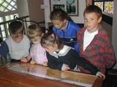
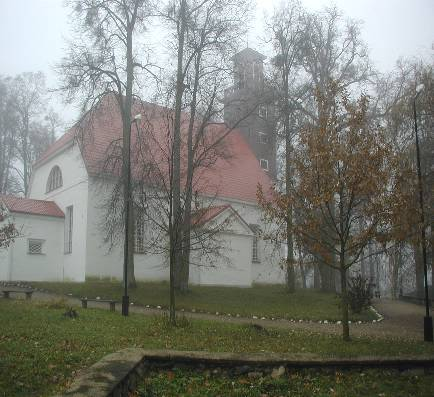
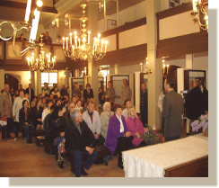
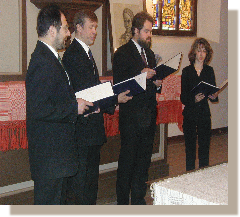
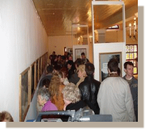
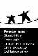
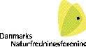
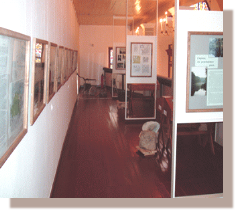
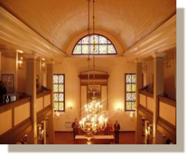
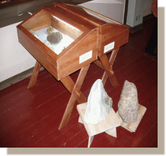
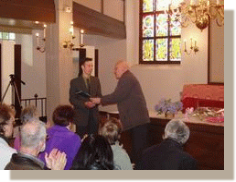